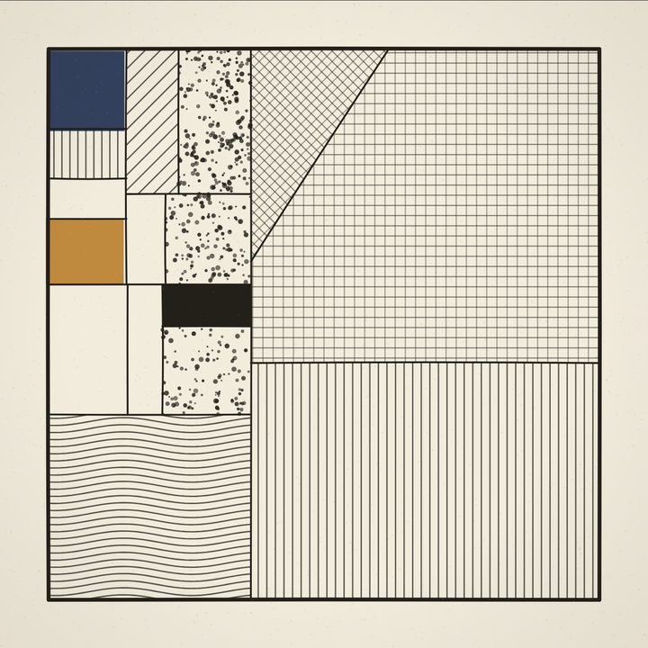
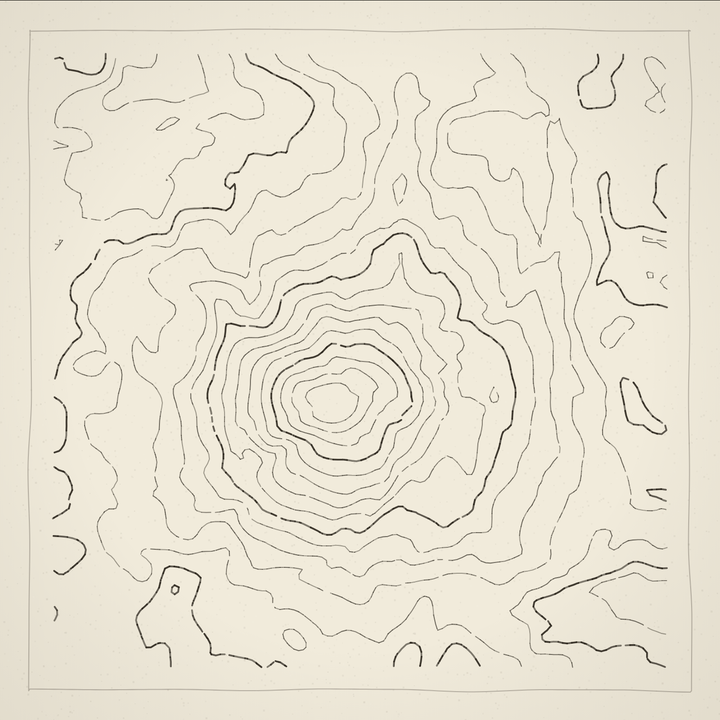
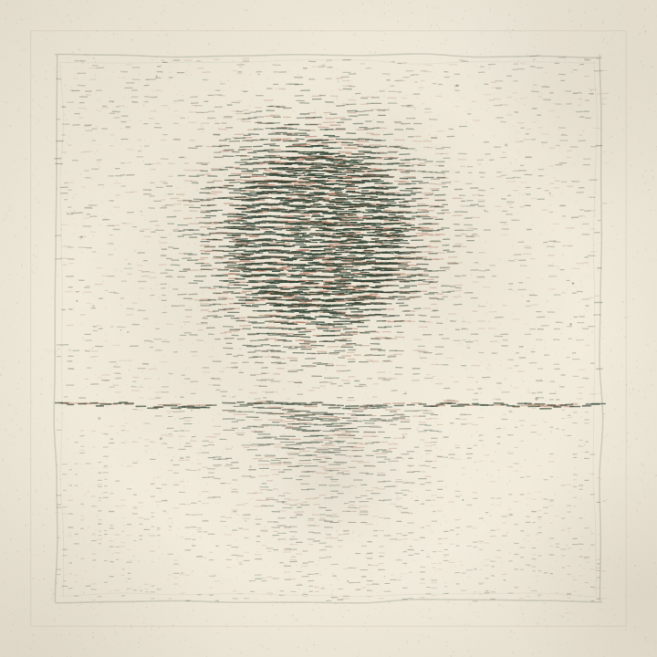
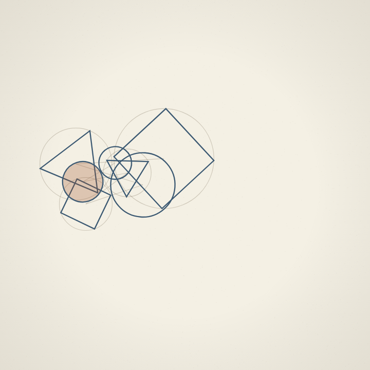
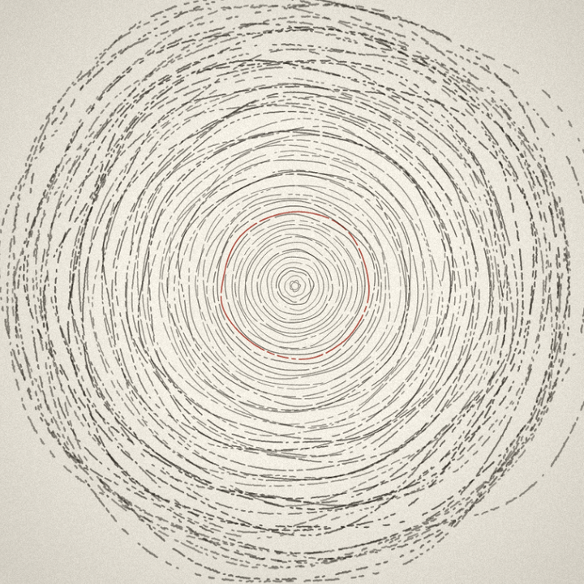

A daily practice in generative art. Small programs, drawn live in your browser.

A rectangle keeps splitting until every piece earns a texture: hatching, stipple, rings, the odd flat solid. Only adjacent to Mondrian in method. Click the piece for a new variation.

Contour lines over imaginary terrain, each drawn a little unsteadily so they read as hand inked. They bunch up where the ground gets steep. Click the piece for a new variation.

A rising sun in two passes of ink over still water, the rust pass deliberately misregistered like a slipped letterpress bed. Click the piece for a new variation.

A tangent chain of circles, squares, and triangles in two inks, construction lines left visible. Click the piece for a new variation.

Concentric rings dissolving from order into chaos, with one red ring. Click the piece for a new variation.